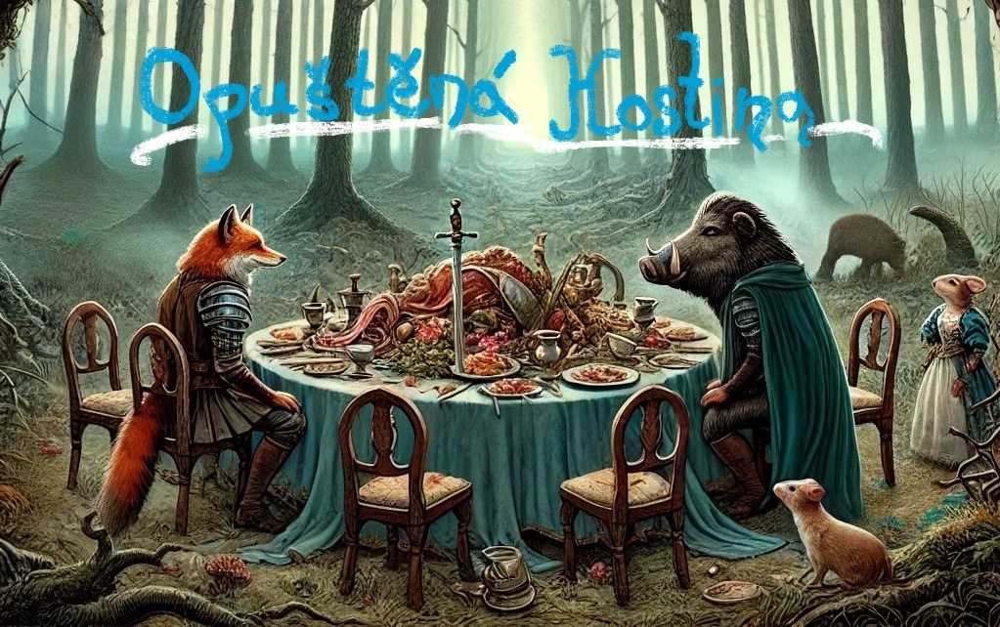
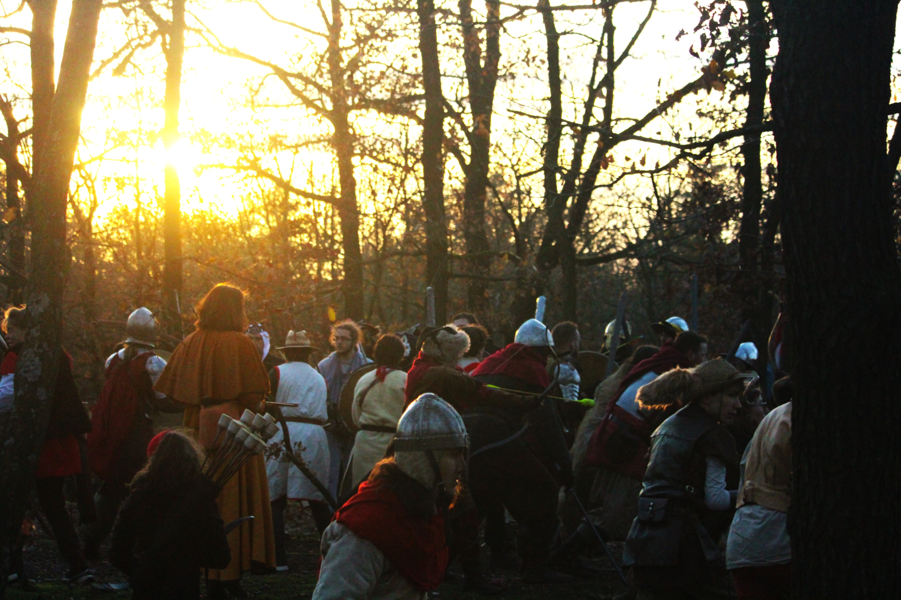
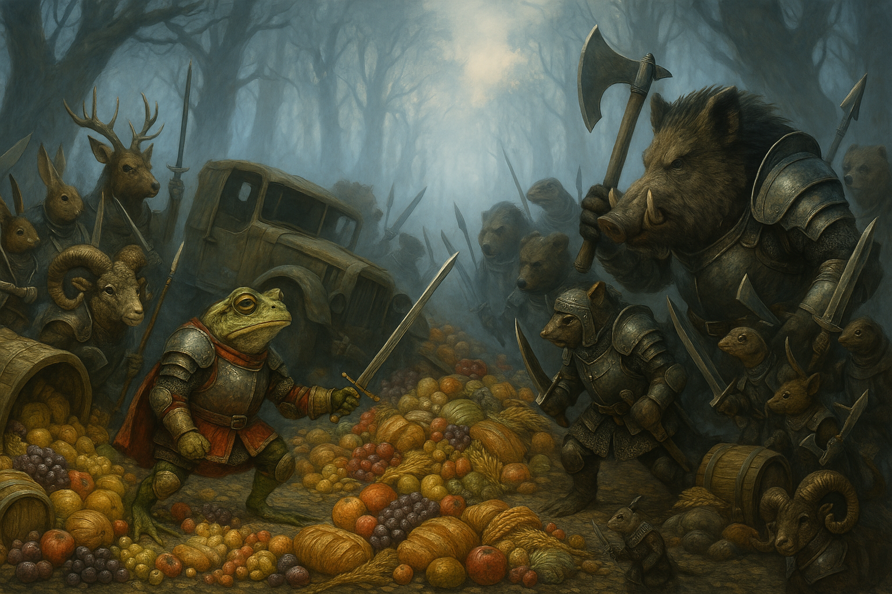

Kapitola první:
V hlubokém lese už i Podzim toho roku pocítil své stráří a na vrata již klepe Zima.
Když půdu skryje sníh, mezi stromy duní vychřice a mráz krade kosti, krutý je život na ty, kteří se nepřipravili.
Opuštěná Hostina
S pádem posledních listů se do svého rodného lesa vrací lišák Barnabáš.
Dlouhé cesty po světě ho učinily vychytralým a naučili ho lsti.
Před Zimnou se vrací domů a doufá, že zde nalezne bezpečí.
Avšak co platilo, již neplatí a les se změnil k nepoznání.
Divočák Běsoboj se spolčil s vyhlášenými surovci lesa a uzmul kontrolu nad zdroji jídla.
Hlasitě se teď po lese hlásá, že jedině Běsoboj zaručí, že jídlo na Zimu bude spravedlivě rozděleno mezi zvířata.
Kdo divočákovi přitaká má teď jistě přeplněný břich, ale na osud ostatních se raději neptejme.
Lišáku Barnabášovi asi chybí slušné vychování, chodí po lese a říká si co chce.
Žádná chvála k Běsobojovi od něj však nezaznívá, dokonce snad lesu-pána pomlouvá.
Ještě hůře snad, některá zvířata mu naslouchají...


Na Podzim toho roku...
Barnabáš znal způsoby lsti a neváhal.
Se svěšenou hlavou, se slovy pokory a obdivu a předstupuje na audienci před Lesu-pánem Běsobojem.
Předložen je honosný dar, krásné jablíčko z krajů dalekých.
Běsobojovi se sbíhají sliny a na okamžik ho pýcha omámí.
Tam to mohlo zkončit, jedinné sousto, poprava lstí a konec Lesu-pánovy krutovlády.
Kdo však na tomhle světě pevně drží moc, často onemocní přísnou nedůvěrou.
Místo Lesu-pána ten den najde svůj konec obyčejný poskok.
A kolo událostí se roztočí s hrozivou setrvačností.
Na kraji lesa leží hrdá vila, žije tam pohromadě jedna lidská rodina.
Potkalo je štěstí, mladý syn našel děvče, s kterým by rádi spolu kráčeli životem.
Budou zásnuby!
Když je veselo, je třeba veselice.
Na pozemku vily je připravena štědrá hostina, přece jen o radost je třeba se podělit výměnou za pár srdečních popřání.
Kéž by mezi takovými okamžiky a zbytkem světa byla velká hráz.
Ale lidé si připravili dobu zlou a ve víru velkých událostí se na jednotlivce zapomnělo.
"Ve jménu státu, ve jménu pltatného zákona..."
Vojáci a výstřely, které nikdo pozval, přináší konec štěstí.
Zůstává jen opuštěná hostina.
Zvířata lesa se chystájí na Zimu a jídlo je klíčem k sebeurčení.
Pro Lesu-pána znamená Opuštěná hostina, ještě hlubší poslušnost od jeho surovců.
Pro Rebely znamená Opuštěná hostina cestu ven z hrubého úchopu.
Je to zlomový okamžik?
Je to rozbřesk svobody?
Strhne se krutá bitva o Opuštěnou hostinu!
Ať si z toho každý láme hlavu, jak chce.
Rebelové jsou poraženi a Lesu-pán a jeho Ochránci lesa vládnou vítězní!
Kapitola druhá:
V hlubokém lese už i Podzim toho roku pocítil své stráří a na vrata již klepe Zima.
Když půdu skryje sníh, mezi stromy duní vychřice a mráz krade kosti, krutý je život na ty, kteří se nepřipravili.
Nedoručený Závoz
Od okamžiku, kdy divočák Běsoboj v posledí bitvě U Opuštěné hostiny upevnil svou nadvládu na lesem, se otočil celý rok.
Lesu-pán nezapomněl, kdo se vzbouřil, a každý, koho shledal nepřítelem lesa, teď bez odpočinku dře ve službě jeho vůli a jeho řádu.
Práce Tě naučí vážit si toho, co máš...
A jeho věrní surovci? Jeho Ochránci lesa? Ti se však rochní v opuletním přepychu.
Těžké je šířit vlastní myšlenky, když máš tlamu plnou skvělýho žrádla.
Hlavně, že se dodržuje zákon.
Barnabáš zmizel, nezůstal ani prach, zůstala jen hořká vzpomínka.
Lesu-pána opatrnost či snad dokonce strach neusíná.
Co když by si zas někdo začal říkat, co chce?
Běsoboj má nový způsob projevu úcty, máš-li trochu za ušima, skončíš za mřížemi.
Žabák Marqise de Laforêt byl synem vznešeného starého lesního rodu.
Problém s takovími rody je, že spravují opravdu dlouhou paměť.
I vyhnaný ze sídla U Jezírka, de Laforêt nezapomněl, ani pár ran ve věznici ho o příběhy z dětsví nepřipravilo.
Je to značný prohřešek tušit, že věci v lese někdy byly jinak.
Je to přímo zločin vědět, že i bez Běsobojova dohledu se dá dobře žít.
Podzim je tu... Co to? Hluk motoru a zvuk kol šíří se lesem, rány okovaných vojenských bot rytmicky klepou o zem.
Křik, výstřely a duté rány kolabujících těl zazní jen v minutě.
Skřípající brzdy a ohlušijící ránu jistě slyšel celý les.
Následky lidské tragédie jsou sečteny, chutný náklad je rozhozen do všech stran.
Byla to jen obyčejná náhoda, ale z věznice je troska a Marquise de Laforêt je na svobodě.


Na Podzim toho roku...
Ve vile na kraji lesa už nežije pospolu rodina.
Teď tam z jistě důležitých strategických důvodů bydlí vojenští oficíři.
Za chvilku budou Vánoce, slavit se přece musí! Jinak by ten život nebyl zrovna k potěšení.
Přes les se vezou parádní pochutiny, hlavně aby se pánové poměli.
Někdo si to nenechal líbit, zazněla palba z postolí a náklad nebyl doručen.
Marquise de Laforêt je na svobodě a zpráva se šíří lesem jako požár.
"Konec věznice! Konec ubíjející práce!" povstala vzpoura, kde se těžilo jídlo.
Nový Odboj je sjednocen.
Věci se dějí dokola a tak co mělo rozmazlovat lidský žaludek, je teď předmětem zvířecího boje o přežití.
Osud nabídl jídlo a tak by si opět každý možná mohl být svým pánem!
Tah vyvolá protitah. Ochránci lesa a Rebelové se ukrutně přetahují o svůj kousek budoucnosti.
V nákladu havárie je nalezen podivuhodný kufřík, který Marquise zděsí a raději ho uschová.
A hle... další střípek naděje pro Rebely?
Lstivý lišák Barnabáš není mrtev a nyní je osvobozen z Běsobojovy hladomorny.
V očích mu však tančí zlost, kterou nikdo nepoznává.
Přece však takového hrdinu nemůže bolestný osud jen tak zlomit?
Ptejme se teď, co to je svoboda a jaká je její cena.
Marquise věří v den, kdy v lese zavládně zasloužená hojnost. Přeci je třeba chopit se příležitosí, které se naskytnou.
Barnabáš už vidí jen jedinou cestu, kdo se snaží vzouřit přírodnímu řádu, přispívá k Lesu-pánově krutovládě.
Spory mezi Barnabášem a Marquisem se stupňují a neznají kompromisu.
Barnabáš zradil staré spojence, a ukradl ten podivný kufřík.
"Je třeba reálná Zima je spravedlivá! Lidské pochutiny z nás činní jen vězně!"
Tento příběh byl slyšen po Lese a někteří uvěrili.
Komanda Barnabášových stoupenců zapálili všechny ty drahocené zásoby na Zimu a jásali při tom, že konečně budou svobodní.
Barnabášovo odhodlání bylo úplné a tak se chopil kufříku.
Barnabáš tušil, co v něm je a samotného ho to děsilo, ale byl připraven udělat "co je potřeba"!
Kufřík obsahoval lidskou zbrǎn a její silou se stal se soudcem i katem.
Věřil, že otáčí zlo proti zlu, ale v ten okamžik Les přišel o svou nevinnost.
Zděšení Marquise de Laforêt a Běsoboj uravřeli křehké spojenectví a Komanda rozprášili, Barnabáš padl.
Zbraň se dostala do rukou Marquise de Laforêt, který ji namířil na Běsoboje připraven konečně ukončit krutovládu.
Hle, zbraň nevystřelila, má už prázdný zásobník. Armády seskupily a nastává bitva...
Běsobojův režim byl sražen na kolena. Běsoboj ustupuje a Zima přikryla Les.
Kapitola třetí:
V hlubokém lese už i Podzim toho roku pocítil své stáří a na vrata již klepe Zima.
Když půdu skryje sníh, mezi stromy duní vychřice a mráz krade kosti, krutý je život pro ty, kteří se nepřipravili.
Krkavčí dům
Lesu-pán, hrozivý divočák Běsoboj, pocítil, že mu chřtán slizkého vzbouřence vyklouzl z úchopu.
Je on ještě vůbec Lesu-pán? Jistě si tak říká. Jistě prská výhrůžky, když si někdo říká, co chce.
Jenže výhrůžka ti nezlomí páteř tak jako čepel sekery...
Žabák Marqise de Laforêt opatrně připravil plány, vážil každý krok-skok a pak se vrhl do víru událostí.
Na prahu loňské Zimy rozehrál osud další kolotoč naděje a odbojáři se za ní odhodlaně hnali.
Být připraven je vše, vše je však někdy děsně málo.
Běsoboj prohrál, přišel o svou milou... krutovládu.
Ptej se však, kdo zvítězil? Byl to snad jen lstivého Barnabáše pomatený sen!
Zásoby se z vůle zatemněné mysli proměnily v kouř a popel a mysl s nimi.
Kdo zůstal na světě, má místo krutovlády krutý hlad – a tedy jsme svobodní?
Po bitvě teprve začal boj, nastala dlouhá pouť zimou a i mršina voní vábivě.
Kdo spatřil Jaro, už asi zapomněl na všechny vznešené důvody.
Plíží se na svět třetí Zima od toho, co zásnubní hostina padla v opuštění, když přišli vojáci.
Třetí Podzim vrhá dům, kde ti honosní mladí lidé bydleli, na les víc než jen stín.
Teď se tam hlučně radují tuční oficíři, poslední knoflíčky pomalu vzdávají držení uniforem přes pupky.
Mastnými prskanci volají po dalším nášupu! Ale ejhle... jak bubeníkovo napětí, ozve se salva z pušky.
Komu seslaná surová síla ukradla zásnuby i život, který snad měl žít, ten neopomene se pomstít.
Třetí Zima již klepe na vrata, ani oficíři ani ten, kdo se pomstil, ji už nespatří.
Můžeš lamentovat, zdali je to lepší než žít ve světě nespravedlivém?
Krkavci se slétají, mají hlad.